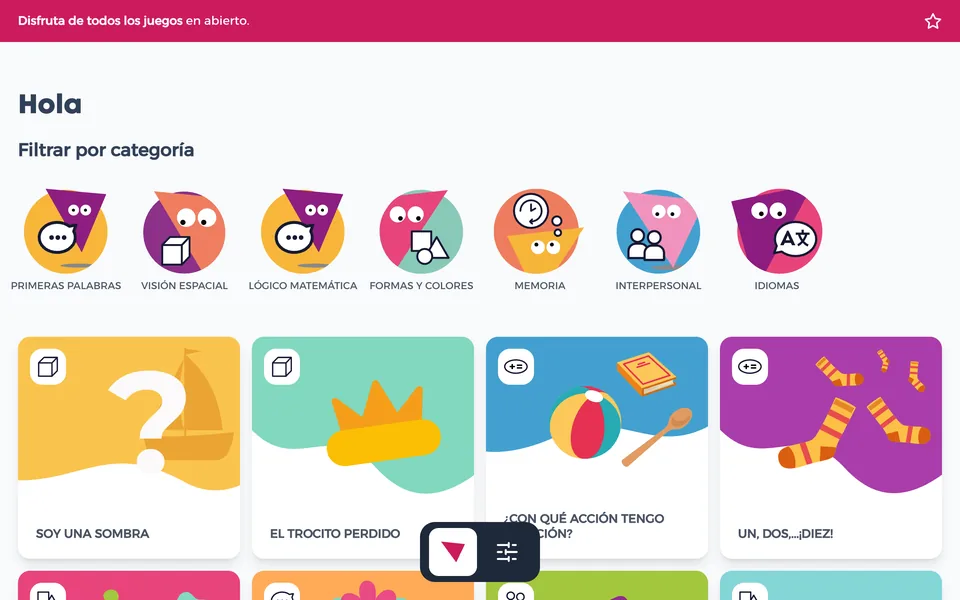
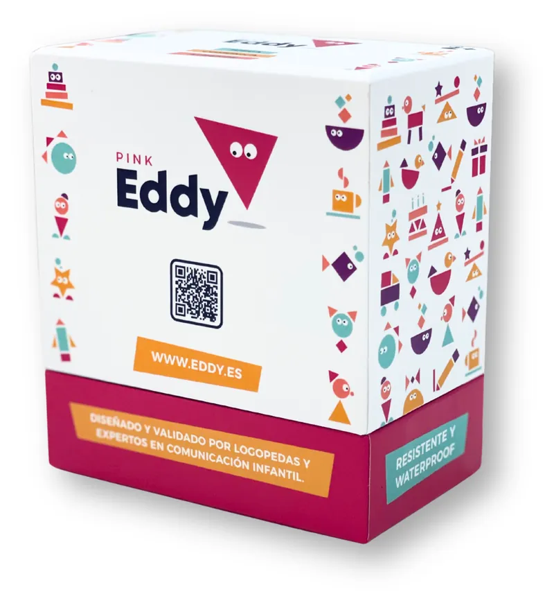

14 juegos para estimular el lenguaje con cartas.
Estos 14 juegos usan las cartas de Pink Eddy para trabajar vocabulario, comprensión y expresión desde los 2 años. Cada uno dice qué trabaja y cómo se juega, y todos se juegan con un adulto al lado.
Se ven los 14 juegos.
-
Parejas por categoría
- Clasificar
- Vocabulario
Para qué sirve: clasificar y trabajar el lenguaje.
- Pon sobre la mesa entre 6 y 10 cartas mezcladas.
- Pídele que las agrupe por tipo: «cositas que comemos», «animales»…
- Si le cuesta, dale pistas: «Busca algo que se come y es rojo…».
-
Mini historias
- Expresión
- Vocabulario
Para qué sirve: desarrollo del lenguaje y creatividad.
- Saca 2 o 3 cartas al azar: una persona, un objeto y una acción.
- Inventa una historia corta con ellas: «La mamá usa la cuchara para comer».
- Deja que el niño la imite o complete partes.
-
Simón dice… con cartas
- Comprensión
- Movimiento
Para qué sirve: comprensión verbal y movimiento.
- Elige cartas de Acciones o de Cuerpo.
- Da la orden enseñando la carta: «Simón dice: toca tu cabeza», «Simón dice: salta como en la carta».
-
Cesta de los tesoros + carta
- Vocabulario
- Comprensión
Para qué sirve: asociar la carta con el objeto real.
- Pon 3 o 4 objetos reales (cuchara, zapato, pelota…).
- Enseña una carta y que busque el objeto que le corresponde.
-
Destino: el lugar correcto
- Clasificar
Para qué sirve: relaciones lógicas con la familia Lugares.
- Pon cartas de lugares, como casa, parque o tienda.
- El niño coloca encima otras cartas que van con cada lugar. En «casa»: dormir, mamá, comer… En «parque»: pelota, árbol, jugar…
-
Adivina, adivinanza
- Comprensión
Para qué sirve: lenguaje receptivo.
- Muestra 4 cartas.
- Da pistas muy sencillas: «Es rojo… lo comemos…» (manzana). «Sirve para vestirnos… va en los pies…» (zapatos).
-
El tren de las categorías
- Clasificar
Para qué sirve: secuencias y clasificación.
- Elige una familia, por ejemplo Comida.
- Pon una carta como «locomotora» y pide al niño que añada «vagones» de la misma familia.
-
Formas y colores en acción
- Colores y formas
Para qué sirve: conceptos básicos.
- Mezcla cartas de Colores y formas.
- Pide: «Encuentra algo rojo», «algo redondo», «algo azul».
-
Las casitas de Eddy
- Clasificar
- Colores y formas
Para qué sirve: clasificar y reconocer familias y colores.
- Pon sobre la mesa los separadores con los nombres de las familias.
- Mezcla el resto de las cartas.
- El jugador coge una carta y la coloca en su «casita» según el color del borde.
-
Bing-Eddy
- Memoria y atención
- Vocabulario
Para qué sirve: atención, vocabulario y reconocimiento visual.
- Cada jugador forma un tablero de 3 × 3 con 9 cartas.
- Saca cartas al azar y nómbralas o imítalas («¡Un gato!» o hacer «miau»).
- Quien tenga esa carta en su tablero le da la vuelta.
- Se juega hasta completar una fila, una columna, una diagonal o el tablero entero.
-
Busca el color
- Colores y formas
Para qué sirve: identificar colores y asociarlos con objetos reales.
- El adulto enseña una carta de color de la familia Colores y formas (por ejemplo, rojo).
- Dice: «¡Busquemos cosas rojas!».
- El jugador busca en la habitación objetos de ese color.
Variante: buscar el color dentro de un grupo de cartas elegidas antes.
-
Mímica con acciones
- Expresión
- Comprensión
Para qué sirve: comprender y expresar acciones, comunicación no verbal e imitación.
- El jugador saca una carta de Acciones.
- La representa sin hablar.
- Los demás adivinan cuál es. Para hacerlo más fácil, deja 2 o 3 opciones a la vista.
-
Asociaciones
- Vocabulario
- Comprensión
- Movimiento
Para qué sirve: ampliar vocabulario, comprender pistas sencillas, relacionar palabra e imagen y moverse.
- Coloca entre 5 y 10 cartas al otro lado de la habitación.
- El adulto dice una palabra, hace un sonido o da una pista («sirve para comer»).
- El jugador corre, señala la carta correcta y vuelve al punto de salida.
- Repite con otras pistas.
-
¿Dónde está la carta?
- Memoria y atención
Para qué sirve: memoria visual, atención y reconocimiento de imágenes.
- Muestra 3 cartas boca arriba.
- Dales la vuelta.
- Pregunta dónde está una de ellas.
Variante: retira una carta sin que la vea y pregunta cuál falta.
Con la app hay más.
La app web play.eddy.es tiene juegos interactivos con las mismas palabras y su audio en seis idiomas. Dos de ellos sirven para aprender las primeras palabras en inglés, francés, alemán, chino y japonés. Se abre en el navegador y necesita conexión.
Entrar en la app
Las 125 cartas, en casa.
Pink Eddy cuesta 24,90 € con IVA. Trae 125 cartas de polipropileno, 10 separadores y 2 tarjetas de instrucciones. Los gastos de envío aparecen en la tienda antes de pagar.
Comprar · 24,90 €